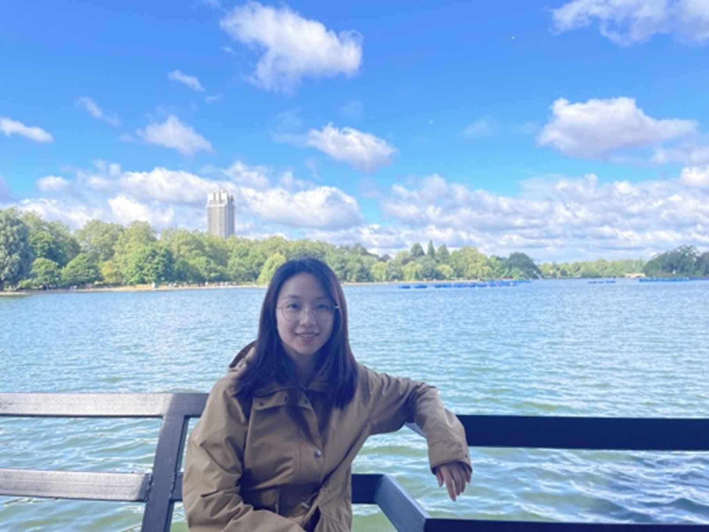
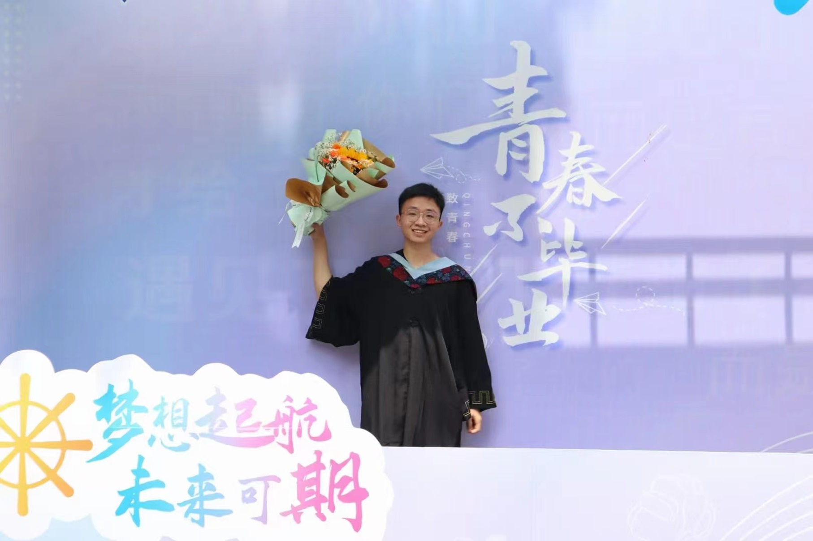
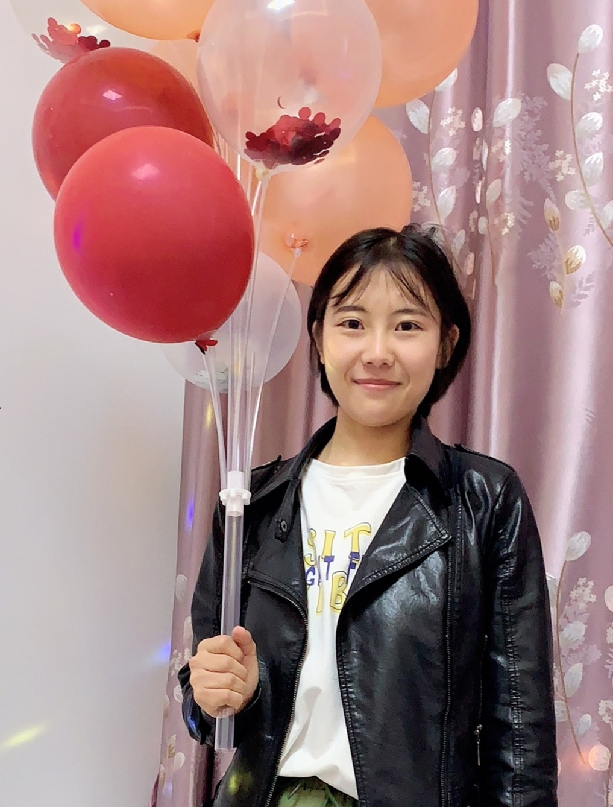

Lab Director
|  |
Mengyuan Gong Email: gongmy426@zju.edu.cn Dr. Mengyuan Gong is an Assistant Professor at the Zhejiang University in the Department of Psychology and Behavioral Sciences. She obtained her PhD in Cognitive Neuroscience from Peking University studing the role of value learning in modulating attention and working memory. |
Doctoral Students
 |
Yilin Chen Email: yl-chen@zju.edu.cn Yilin graduated from the School of Computer Science, University of Electronic Science and Technology of China in 2018, and joined the laboratory in the spring of 2020. Her research interests revolve goal-driven and reward-driven attentional processes and mechanisms. She mostly uses behavioral paradigms, EEG, fMRI, TMS, VR and other methods in her research. |
|
 |
Qingsong Tan Email: tanqs@zju.edu.cn Qingsong graduated from the School of Psychology of Shanxi Normal University in 2022 and joined the lab in the fall of 2022. Qingsong’s current research interests focus on the effects of reward history on spatial attention by behavioral paradigms and EEG. |
 |
Xianming Dai Email: 12339019@zju.edu.cn Xianming graduated from the School of Foreign Languages of Peking University in 2023 and joined the lab in the fall of 2023. |
 |
Xuanyu Liu Email: lxy_zju@163.com Xuanyu graduated from the School of Psychology, Renmin University of China in 2024, and joined the lab in 2024. |
Master Students
|
 |
Oudeng Email: 22239012@zju.edu.cn Oudeng graduated from Shanghai Jiao Tong University in 2022 and joined the lab in the fall of 2022. Her current research focuses on attentional modulation by different learning methods through behavioral paradigms. |
 |
Xiaodong Zhang Email:916639792@qq.com Xiaodong graduated from the Department of Psychology of Zhejiang University in 2023 and will join the lab in the fall of 2024. |
Postgraduate Students
Yuehan Zhou: 2021 Postgraduate student.
Shuheng Ouyang: 2022 Postgraduate student.
Alumni
Weidi Wu: Master student in the class of 2019.
Chaoya Pan: Master student in the class of 2021.
Shikai Chen: Undergraduate student in the class of 2019. He is currently pursuing a PhD in Psychology from the Chinese University of Hong Kong (full scholarship).
Bolin Chen: Undergraduate student in the class of 2019. Currently pursuing a master's degree at the School of Art and Archeology in Zhejiang University.
Yunfan BaiZhang: Undergraduate student in the class of 2019. She is currently pursuing a master's degree at the Department of Psychology and Behavioral Sciences in Zhejiang University.
Sihan Zhang: Undergraduate student in the class of 2020.